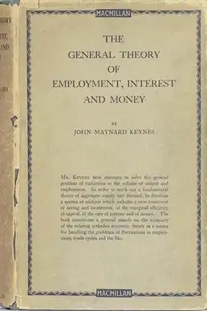
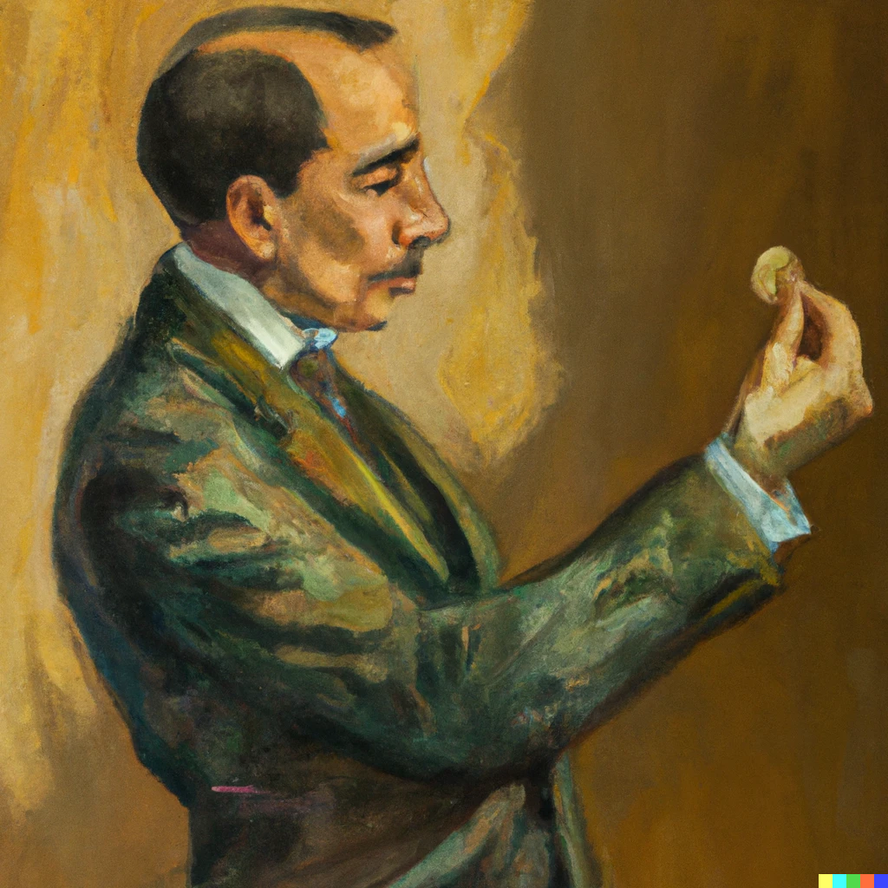
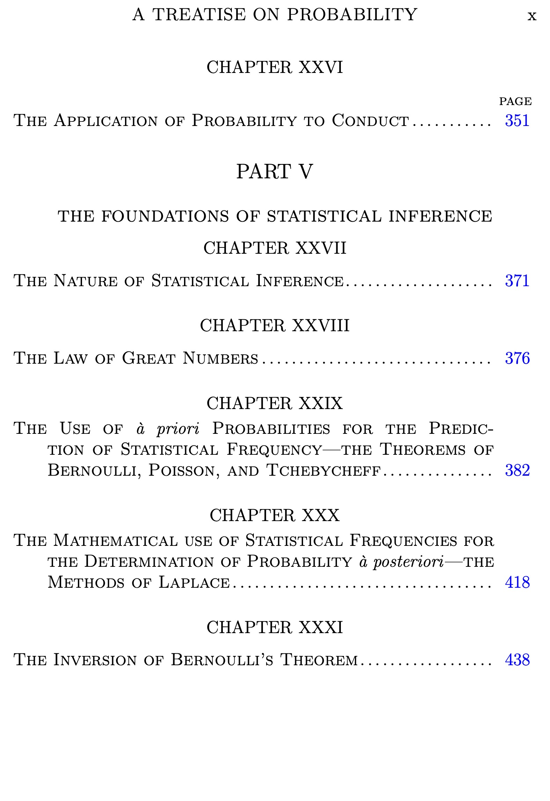
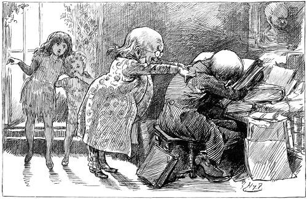

Keynes Seminar, Fall 2023
Categories
All
(13)
overview
(1)
readings
(2)
syllabus
(1)
weekly handout
(9)
Keynes Seminar, Fall 2023
Order By
Default
Title
Date - Oldest
Date - Newest
Author

Week 9: The General Theory
weekly handout
Starting on Keynes’s greatest book, the 1936 General Theory of Employment, Interest and Money. Naturally, we’re starting at both ends, and working towards the middle.
Nov 7, 2023
Brian Weatherson
Week 8: Ramsey’s Criticisms
weekly handout
So what were Ramsey’s criticisms of Keynes?
Oct 30, 2023
Brian Weatherson
Week 7: Probability and Conduct
weekly handout
A quick tour through formal ethics, as it was understood around 1921.
Oct 23, 2023
Brian Weatherson
Week 6: Induction
weekly handout
Keynes aims to respond to a problem of induction from Hume, but not Hume’s Problem of Induction.
Oct 16, 2023
Brian Weatherson

Week 5: Weight
weekly handout
This was meant to be half about weight and half about frequentism, but I wrote so much about weight that I decided it would be enough and stopped there. We can, and should, talk about frequentism in class.
Oct 2, 2023
Brian Weatherson
Week 4: Indifference
weekly handout
Keynes discusses the Principle of Indifference, his new name for the best hope we have for getting numerical probabilities out of ignorance.
Sep 25, 2023
Brian Weatherson
Week 3: Starting on the
Treatise
weekly handout
Chapters 1 and 2 of the
Treatise
set out Keynes’s answer to what we’d now call the question of how to interpret probability. He thinks that probability is a logical relation that grounds rational belief. Just what he means by ‘logical’ is going to be a matter of some import. In chapter 3 he sets out his reasons for thinking that probability is not in general numerical.
Sep 18, 2023
Brian Weatherson
Week 2: My Early Beliefs and Economic Possibilities
weekly handout
Two of Keynes’s most memorable essays. First, his (possibly unreliable) memoir of his time discussing philosophy as a student, with emphasis on Moore’s lasting influence on him. Second, his upbeat assessment of the economic future, written just as Britain was ending a decade spent entirely in recession, and the Great Depression was about to start.
Sep 11, 2023
Brian Weatherson
Week 1: Keynes’s Life
weekly handout
An overview of the life and work of John Maynard Keynes.
Aug 28, 2023
Brian Weatherson

Syllabus
syllabus
Syllabus for graduate seminar on the philosophical work of John Maynard Keynes, Fall 2023.
Aug 27, 2023
Brian Weatherson
Keynes Seminar
overview
A brief guide to what we’re covering in the course.
Aug 1, 2023
Brian Weatherson
My Early Beliefs
readings
A 1938 memoir by Keynes of his time as a philosophy student at Cambridge, how it affected his later career, and what he thought was missing from his early world view.
Sep 1, 1938
John Maynard Keynes

Economic Possibilities for Our Grandchildren
readings
A 1930 essay by Keynes setting out his vision for the future of the British economy. Just how much this should be thought of as a prediction or as an ideal worth striving for is one of many interpretative questions the essay raises.
Oct 5, 1930
John Maynard Keynes
No matching items